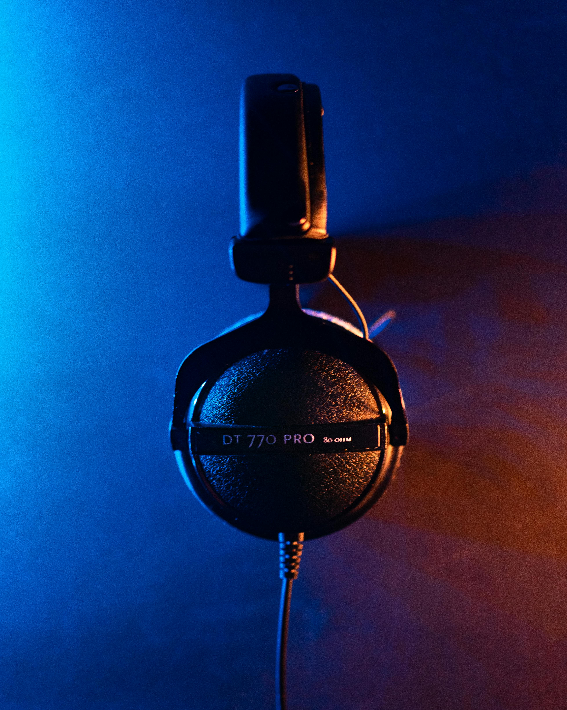
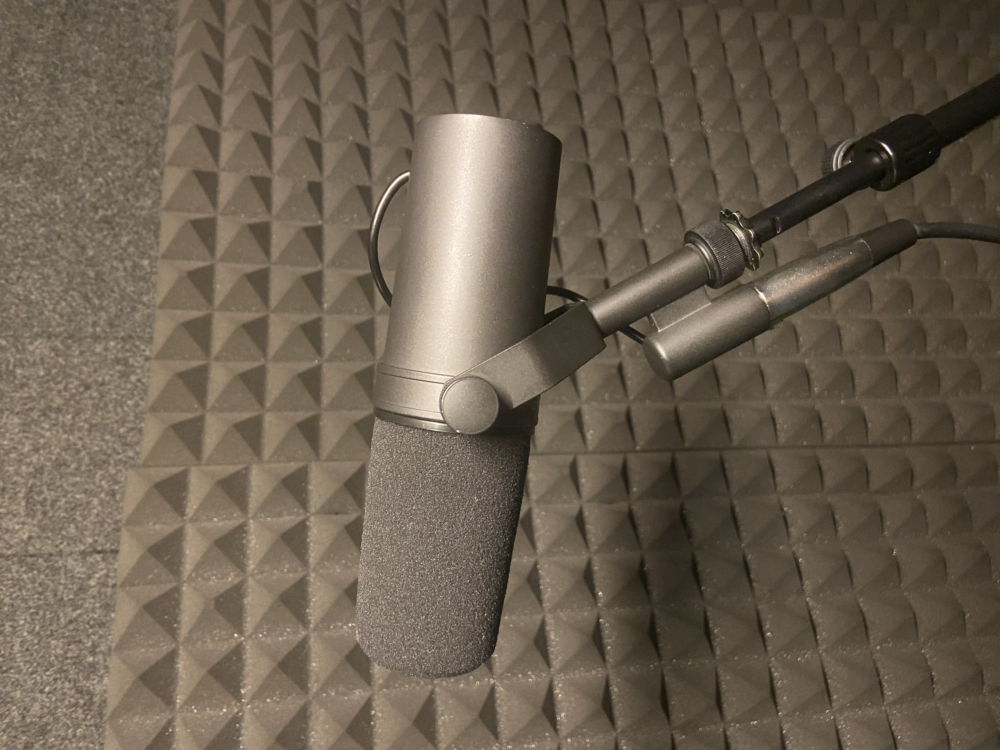
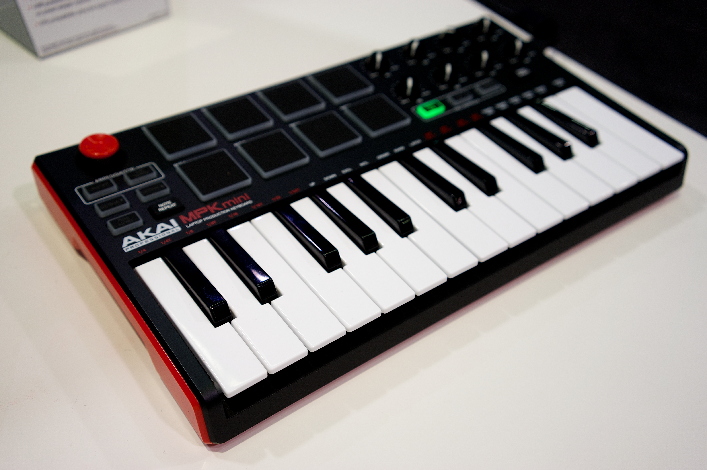

Hardware Recommendations
Professional-grade music hardware can impressively improve your workflow. Here are Producer Grade's best picks:

HEADPHONES: Beyerdynamic DT 770 Pro
Studio headphones that combines comfort, reliability, and sound quality. Used extensively in the production industry. $149

MICROPHONE: Shure SM7B
A studio-grade microphone that records and presents vocal recordings with top-notch noise cancellation and pro-level equalization built in. $399

MIDI DEVICE: Akai MPK Mini MKII
A compact 25-key MIDI controller with intensive controls and user-friendly interactivivity. Whether you're traveling or working in the studio, this device provides smooth assistance in everyday production. $99